The main impact of a 200 basis-point (2.00 percentage-point) rise in United States interest rates on the United Kingdom is a 0.07% drop in GDP by the 11th quarter — a limited spillover, consistent with the UK sitting in the "minimal" band, eighth-largest absolute GDP response among the countries modelled. This is a small, slow-building hit rather than a dramatic one: the first-quarter GDP effect is essentially nil at −0.0008%, and the peak only arrives nearly three years in. The story is one of a modest external tightening impulse transmitted mainly through financial conditions and trade competitiveness, with the real economy absorbing a shallow but persistent drag.
Demand and trade. Household consumption (Consumption) tracks the GDP path closely, peaking at −0.04% around Q11 and still −0.01% below baseline at Q20 — households pull back gradually as financial conditions tighten. Private investment (Investment) is hit much harder, peaking at −0.20% in Q10, reflecting the higher cost of capital; it remains −0.03% below baseline at Q20. Net exports (Net Exports, the trade balance — this model does not split imports from exports) actually improve, peaking at +0.05% of GDP in Q9, as the weaker real exchange rate makes UK goods more competitive abroad. Government spending (Gov Spending) rises modestly, peaking at +0.01% in Q11, providing a small automatic-stabiliser offset, while government debt (Gov Debt) drifts down to −0.005% by Q13 as the primary balance improves relative to baseline.
External / FX. The real exchange rate (Currency Strength) depreciates — the series rises to +0.47% above baseline by Q9, meaning the pound is weaker in real terms. That lines up cleanly with the net-exports improvement: a more competitive currency supports the trade balance, which is the one channel in this model that partially offsets the domestic demand drag. The currency effect fades only slowly, still +0.11% at Q20.
Labour. Employment falls, peaking at −0.06% below baseline in Q14, and remains −0.03% down at Q20 — a slow labour-market deterioration that lags the output hit. Unemployment rises in parallel, peaking at +0.04 percentage points in Q14 and still +0.02pp at Q20. Real wages (Real Wages) initially rise, peaking at +0.04% in Q11, as falling CPI inflation boosts real incomes even as nominal wage growth slows; this gain fades and turns slightly negative (−0.01%) by Q20.
Prices. CPI inflation (CPI Inflation) rises modestly at first, peaking at +0.02 percentage points in Q3, before falling below baseline from Q10 onward and reaching −0.01pp by Q20 — the initial uptick reflects currency-driven import costs, while the later decline reflects weak demand. Domestic inflation (Domestic Infl.) follows a similar arc, peaking at +0.01pp in Q3 and turning negative from Q10. Firms' marginal cost (Marginal Cost) falls steadily, peaking at −0.04% below baseline in Q11, consistent with softer demand and lower input costs.
Financial conditions. The local policy rate (Policy Rate) rises slightly, peaking at +0.01 percentage points in Q8, before easing back below baseline from Q15 as the growth drag dominates. Government bond prices (Bond Price) fall sharply, peaking at −0.68% below baseline in Q8, as higher discount rates hit valuations. The 2-year government yield (Govt 2Y Yield) rises to +0.01pp in Q4 before turning negative from Q12; the 5-year yield (Govt 5Y Yield) peaks at −0.01pp in Q19; and the 10-year yield (Govt 10Y Yield) drifts down to −0.005pp by Q17. Equity prices (Equity Index) fall hardest among financial variables, peaking at −0.35% below baseline in Q8 and still −0.05% down at Q20. Tobin's Q (Tobin's Q), the value of installed capital, falls to −0.14% in Q10. House prices (House Prices) decline steadily, peaking at −0.05% below baseline in Q18. Bank credit (Bank Credit) contracts to −0.03% by Q17, and lending spreads (Credit Spread) widen marginally, peaking at +0.0004pp in Q17 — a very small financial-frictions effect.
Sectoral and capital. Manufacturing GDP (Manuf. GDP) is hit hardest of all output measures, peaking at −0.15% below baseline in Q9, reflecting its greater trade and investment sensitivity. Services GDP (Services GDP) falls more modestly, peaking at −0.05% in Q11. The capital stock (Capital Stock) erodes slowly, reaching −0.01% below baseline by Q20 as weak investment accumulates into a smaller productive base.
Timing. The GDP hit is largest in Q11 at −0.07%, and it has largely faded by Q20, when it stands at −0.02% — still negative but well off its peak. The equity and bond-price effects peak earlier, around Q8, while labour-market effects peak later, around Q14. Nothing here changes sign in GDP terms; the drag simply decays.
Close. These are model impulse responses to a single identified shock — a 200bp US rate rise — relative to a baseline path, not forecasts. They describe how the UK economy would be expected to respond under the model's estimated transmission channels, and should be read as conditional, mechanical responses rather than predictions of what will actually happen.
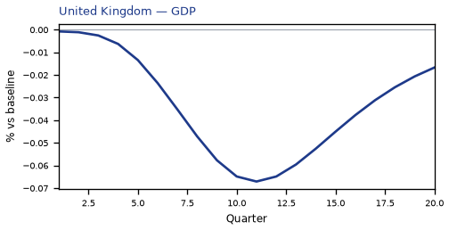
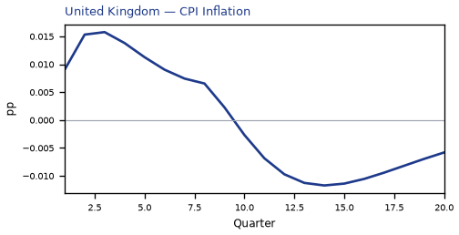
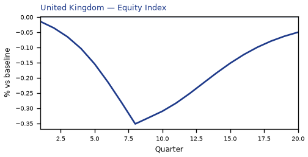
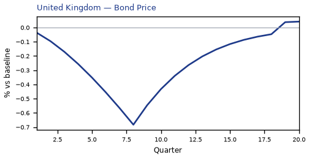
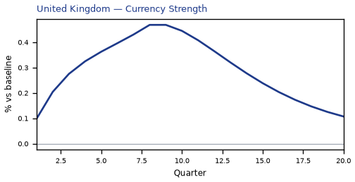
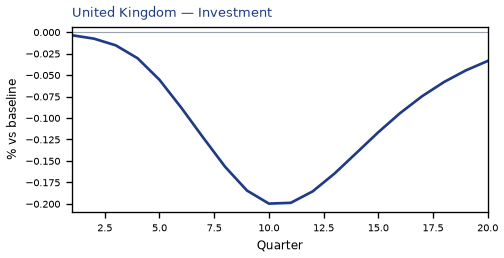
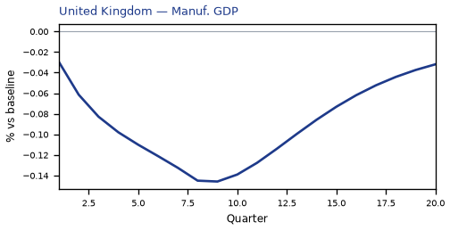
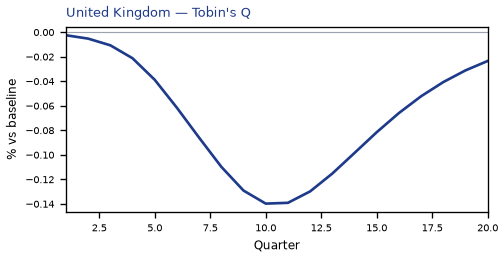
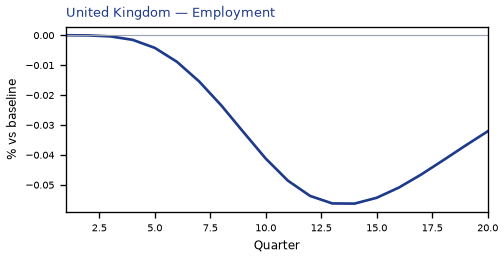
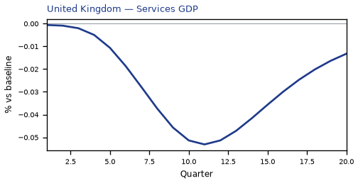
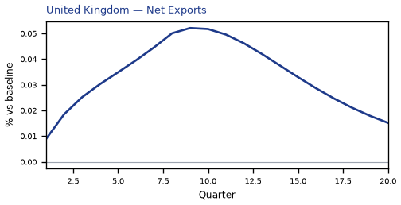
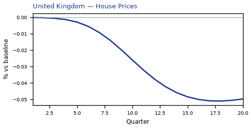
source=live · global_macro_v5 · contract v6 · Q1–Q20 JSON · not financial advice